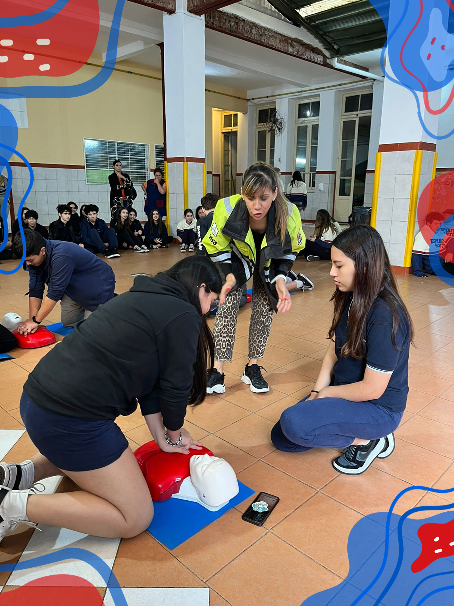
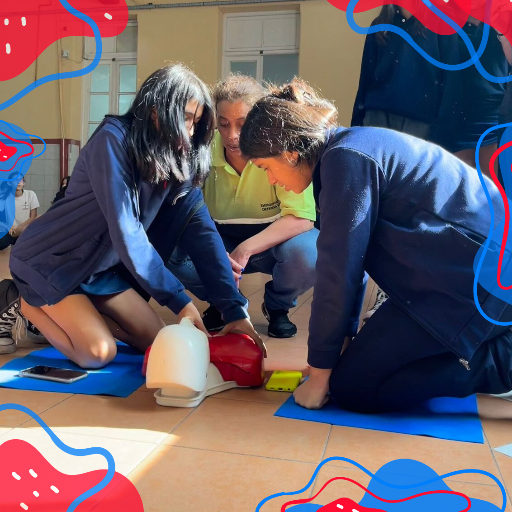

Taller de RCP
Por: Azul Peluso 5ºB
El taller de Reanimación Cardiopulmonar (RCP) fue una experiencia fundamental para aprender habilidades que podrían salvar vidas, con teoría y práctica, los alumnos aprendimos cómo reconocer y responder ante emergencias médicas, así como las técnicas básicas de reanimación en caso de una parada cardiorrespiratoria
El día (26 de Abril) los alumnos de 5 año A y B 2 año A y B y 3 año A estuvieron presentes en el curso de Reanimación Cardiopulmonar (RCP). El curso fue organizado por el ministerio de justicia y seguridad y el ministerio de educación, quienes creen que la capacitación en RCP es esencial para que los estudiantes podamos actuar de manera correcta en situaciones de emergencia.

Esta actividad fue un espacio presencial para que a través de un proceso de capacitación a cargo de personal de Defensa Civil, la jornada contó con dos partes, una parte teórica donde se nos preguntó qué era lo que sabíamos y se nos comentó cosas que no sabíamos, de una manera muy didáctica respondiendo todas y cada una de las dudas, la segunda parte fue la práctica, se nos brindó cinco muñecos para que practiquemos la maniobra de reanimación, en grupos de dos personas para turnarnos, después de un determinado tiempo cambiaba el grupo.

La capacitación en RCP es un conocimiento fundamental que puede marcar la diferencia en la supervivencia de una persona ante una emergencia médica, ahora estamos mejor preparados para responder ante situaciones de emergencia y vamos a poder poner en práctica lo aprendido para poder salvarle la vida a alguien.
